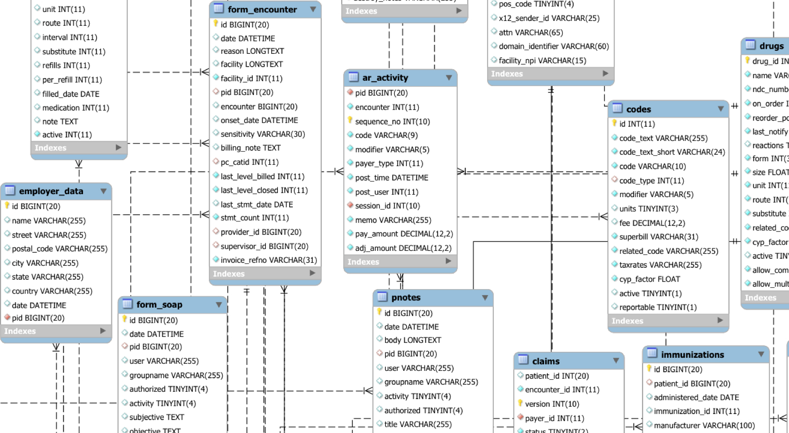
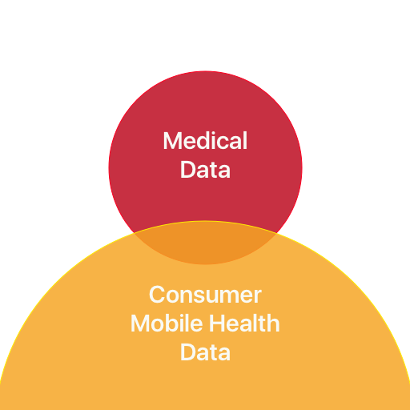
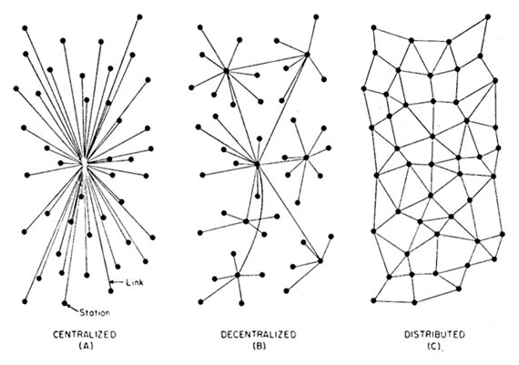

Blockchains in Healthcare
Healthcare Data and Databases AIMed 2016
E. Kevin Hall
What is health data?
Digital: No. Accessible: No
We moved to EHRs…

Digital: Yes. Accessible: Still No
Mobile Health
Our next problem.

Unfulfilled Digital Promise
The promise of digital data is more than this.
It's greater than isolated medical records on a hard disk.
The promise is accessibility and interoperability. Our data should work for us; our patients' data should work for them.
Current Data Sharing 'Solutions'
- Hospital / Practice EHRs
- Patient "Portable" e.g. USB drives.
- "Independent" Third Party Cloud Services
Problems: Accessibility
Need your records? Submit a request. Then maybe get a printout of them.
"MyChart"
Problems: Interoperability
Can data be used effectively?
Problems: Trust
- Old world transactions required in-person meetings.
- Today's digital transactions require third parties.
Ideal Goals
- Patients' records should be consistent and available across institutional boundaries.
- Access should be strictly determined by the patient him/herself.
- When shared, all parties should be able to understand the data with a goal of increasing healthcare quality.
Blockchains
A shared, distributed, immutable ledger for transactional data that establishes accountability and transparency. 
On Distributed Communications, Paul Baran 1964
Blockchain Qualities (1/2)
- A Blockchain is a distributed transaction ledger.
- Composed of "Blocks" which are time-similar collections of transactions.
- Blocks are immutable, integrity verified - each block contains a cryptographic hash.
- Hash of a block in the chain is dependent on the prior block. Chain is immutable.
Blockchain (image)